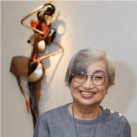

Featured Artist

Anita Del Rosario
Born 1955, Philippines
Contemporary Art
About the Artist
Anita del Rosario is a Filipino sculptor, painter, jewelry designer, and illustrator whose career began as a komiks artist in the 1970s.
A Fine Arts graduate from the University of Santo Tomas.
Artist Statement
"I aid visual stories through carving and painting. My art is the observation of and interaction with an ever-changing landscape, a collaboration with the feminine and nature."
Selected Exhibitions
- Lunaria Art Fair (2025)
- Lunaria Art Fair (2024)
- Residuals (2019)
- Piri-babae – Garden (2019)
Awards & Recognition
One of the top 100 Women Artists in 2018
One of the distinguished three winners by the CCP Cultural Education Foundation in 2010